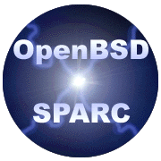

![[OpenBSD]](../images/bsd_small.gif)
OpenBSD/sparc läuft auf den meisten der 32bit Sun SPARC Workstations, inklusive
der sun4, sun4c, und sun4m Architekturen
(nicht die 64bit Ultra SPARC Computer).
Momentan verantwortlich für den port ist
Art Grabowski (art@openbsd.org).
Weitere Leute, die zum Projekt beitragen wollen, sind jederzeit willkommen!

Inhaltsverzeichnis
Geschichte:
Der originale BSD4.4 port wurde von Chris Torek als Vertragsarbeit für
den LBL gemacht. Der Code wurde von Chris Mitte 1993 veröffentlicht, und Theo de Raadt
hat ihn für NetBSD angepasst. Theo und Markus Wild arbeiteten
daran, Chris' original SunOS Kompatibilitäts Code in eine vollständige und
hochgradig zuverlässige Emulation umzuwandeln.
Chuck Cranor portierte den sun4c Code auf die Sun4 Architektur (die 8KB
Seitengrössen hatte),
und Theo fügte seinen Code so ein, dass es möglich war, die selben Kernel und Programme
sowohl auf sun4c als auch auf sun4 Maschinen laufen zu lassen (im Gegensatz
zu Sun's verschiedenen Kernel-Umgebungen).
Diese letzte Änderung erfoderte auch ein Neuschreiben des Gerätekonfigurations-Codes.
Kurz nach dem Erscheinen von NetBSD/sparc 1.0 schrieb Peter Galbavy einen
ESP scsi Gerätetreibver als Ersatz für Chris' sparc-spezifischen scsi
Code; dieser neue Treiber hatte dummerweise einige Probleme und wurde schliesslich
ersetzt.
An diesem Punkt enstand ein Konflikt zwischen Theo und den Leuten, mit denen
er das NetBSD-Projekt gestartet hatte, und Theo wurde von den anderen `Core Group'-Mitgliedern
gezwungen, NetBSD zu verlassen.
Nachdem Theo NetBSD verlassen hatte, taten andere Leute etwas für den port:
Paul Kranenburg
portierte einen Floppy-Treiber und begann an der Unterstützung für die 4/400 zu arbeiten.
Chuck hat viele Stunden an der Unterstützung für die ie, xy, xd Gerätetreiber gearbeitet.
Theo führte die Arbeit unabhängig davon fort und entwickelte ein paar Zusätze:
P4 Unterstützung, flexible Boot Strategie, ein paar Grafiktreiber mit Hilfe von
John Stone, und jede Menge bug fixes. Viele Leute werden sehr interessiert sein,
dass der ESP scsi Treiber komplett von Theo ersetzt wurde, und dass er disconnect/reconnect
unterstützt.
Das Portieren von OpenBSD/sparc auf die sun4m Plattform wurde von Theo begonnen,
aber es tauchten Probleme mit Sehnenscheidenentzündungen an den Handgelenken auf und dazu kamen
die Probleme mit dem NetBSD core, also stoppte er die Arbeit.
Theo gab seine sun4m-Arbeit an Aaron Brown aus Harvard ab, der aus Margo Seltzer's
Forschungsgeldern bezahlt wurde.
Dieses anfängliche Material bestand hauptsächlich aus einigen Versuchen, eine pmap-Struktur
zu erzeugen, die alle 3 MMU-Typen effizient benutzen konnte. Ausserdem war
David Miller vom S/Linux Projekt etwas beteiligt.
Theo und Jason Downs fügten den NetBSD/sparc Code wieder in OpenBSD ein, so dass
OpenBSD/sparc wieder benutzbar wurde. Jason Wright schrieb einige neue SBus Ethernet
Treiber mit Informationen vom S/Linux Projekt und fügte ein paar Dinge aus
den NetBSD Quellen hinzu, um die Stabilität dieser Architektur zu verbessern.
Und die Arbeit geht weiter...
Momentaner Status:
Die Leute, die am meisten an OpenBSD/sparc arbeiten sind
Jason Wright, Theo de Raadt, Todd Fries und Artur Grabowski.
Email kann an die Verantwortlichen des OpenBSD/sparc ports gesendet werden:
sparc@openbsd.org.
Um in die OpenBSD/sparc Mailingliste aufgenommen zu werden, schicke eine Mail mit dem Inhalt
"subscribe sparc" an majordomo@OpenBSD.org.
Bitte lies vorher unbedingt unsere Mailinglisten Policy bevor du die
Liste abonnierst.
Ein wichtiger Punkt hinsichtlich OpenBSD/sparc ist, dass es so konstruiert wurde,
dass ein einzelner Kernel auf
ALLEN UNTERSTÜTZTEN Sparc Maschinen funktioniert.
Wo SunOS und Solaris immer separate `Kernel Architekturen' hatten, also sun4,
sun4c, und sun4m, läuft der selbe `GENERIC' OpenBSD Kernel auf allen unterstützten
Modellen.
Die meisten Probleme mit OpenBSD/sparc kommen vermutlich eher aus der breiten Menge an
Sparc Prozessoren und Cache Implementationen, zusammen mit ihren undokumentierten
Bugs, als aus den allgemeinen Kernelproblemen.
Feedback darüber, welche Maschinen zuverlässig arbeiten und welche nicht, wird immer benötigt,
insbesondere von neueren Modellen oder Upgrades.
OpenBSD/sparc kann via 'floppy boot images' fü
sun4c und sun4m, miniroot images für Maschinen ohne Floppies
(und sun4 Maschinen) installiert und upgegraded werden; genauso aber über Netzwerk und 'diskless' Installationen.
Wo man ihn herbekommt:
Liste der unterstützten Hardware:
OpenBSD/sparc läuft auf den folgenden Klassen von Maschinen:
- sun4: die VME Serie
- 4/100: Original sparc mit VME. Viele Hardware Bugs.
- 4/200: Eine ziemlich annehmbare nur-VME Maschine
- 4/300: Eine 25MHz VME Maschine mit vielen Geräten direkt auf dem Mainboard.
In anderen Teilen ähnelt sie sehr der SS1+.
- sun4c:
- SS1: Die original 20MHz sun4c.
(Hardware Beschränkungen verhindern das Funktionieren der SBus DMA Geräte
in einigen der Slots).
- SS1+: 25MHz Version von der Maschine oben.
(Hardware Beschränkungen verhindern das Funktionieren der SBus DMA Geräte
in einigen der Slots).
- IPC: SS1+ in einem Würfel, mit eingebauter bwtwo Grafik
- SLC: SS1+ eingebaut in einem B&W Monitor
- SS2: 40MHz Version der SS1
- IPX: SS2 in einem Würfel, mit eingebauter cgsix Grafik
- ELC: SS2-Performance eingebaut in einem B&W monitor
- sun4m:
- 600MP: Die original Sun4m Maschine. Dies ist eine mbus Maschine
mit SBUS und VME Bussen.
- LC: 50MHz MicroSPARC-1 basierte Maschine (aka Classic)
- LX: LC mit ein paar mehr Geräten
- SS4: Preiswertere Version der SS5, erhältlich mit 70MHz und 110MHz
- SS5: MicroSPARC-2 basierte Maschinen verfügbar in 60, 70, 85,
und 110 MHz Versionen
- SS5: TurboSPARC CPUs in beschleunigten SS5 Machinen, die mit 170 MHz laufen
- SS10: Pizzabox mbus-basierte Maschine
- SS20: Verbesserte Pizzabox mbus-basierte Maschine
- Sun Voyager (ungetestet)
- Genauso die folgenden Klone:
- Aries Research Inc, Parrot II (SS2 Klon)
- Axil 243 und 245 (und vermutlich andere Modelle) (SS5 Klone)
- Axil 320 (SS20 Klon)
- Opus 5000 (SS1 Klon)
- Opus 5250 (SS1 Klon)
- SPARCbook 3GX, 3GS, und 3XP von Tadpole (MicroSPARC-2)
- CPU5V: VME Karte von Force Computer (sun4m)
- TWS,SuperCOMPstation-20S (SS20 Klon).
- TATUNG micro COMPstation 5 (SS5 Klon)
- Tatung micro COMPstation LX (LX Klon)
- RDI,PowerLite: sun4m Modelle, verfügbar mit 50MHz, 85MHz, und 110MHz
- RDI,BrigeLite
- DTKstation/Classic+
- Transtec SS5/170
Unterstützte Geräte
Diese List sagt als Grundlage aus, dass alle `standard' sun4c oder sun4m
"sparcstation" oder "sparcserver" Maschinen wahrscheinlich funktionieren; bei sun4 Maschinen
muss man vorsichtiger sein.
- Mbus CPU Module
- SM30: 30 oder 36 MHz Supersparc ohne secondary cache
- SM40: 40 MHz SuperSPARC ohne secondary cache
- SM41: 40 MHz SuperSPARC mit 1MB secondary cache
- SM50: 50 MHz SuperSPARC ohne seconary cache
- SM51: 50 MHz SuperSPARC mit 1MB secondary cache
- SM51-2: 50 MHz SuperSPARC mit 2MB secondary cache
- SM61: 60 MHz SuperSPARC mit 1MB secondary cache
- SM61-2: 60 MHz SuperSPARC mit 2MB secondary cache
- SM71: 75 MHz SuperSPARC mit 1MB secondary cache
- SM81: 85 MHz SuperSPARC mit 1MB secondary cache
- SM81-2: 85 MHz SuperSPARC mit 2MB secondary cache
- SM100: dual 40 MHz Cypress 7C601 mit 64KB primary cache
- Ross HyperSparc RT620/RT625 bei 90MHz, mit 256KB primary cache
- Ross HyperSparc RT620/RT625 bei 125MHz, mit 256KB primary cache
- Ross HyperSparc RT620/RT625 bei 150MHz, mit 512KB primary cache
- Ross HyperSparc RT620/RT625 bei 166MHz, mit 512KB primary cache
- Sun Tastatur und Maus
- Type 2, 3, 4, und 5 Tastaturen mit verschiedenen Layouts
- Floppy Laufwerke:
- sun4c und sun4m Floppy Disk Laufwerk
- Serielle Ports:
- ttya und ttyb onboard serielle Ports (können bei Bedarf als Konsole eingesetzt werden)
- 4/300 ttyc und ttyd onboard serielle Ports
- SBus magma serieller Port Karten, inklusive: 4Sp, 8Sp, 12Sp, 16Sp, LC2+1Sp,
2+1Sp, 4+1Sp, und 8+2Sp.
- SBus Serielle/Parallele Schnittstellen (SUNW,spif, 501-1931)
- Audio Unterstützung:
- onboard Audio Unterstützung für Systeme mit AMD79C30 8-bit Audio Chips
(das schliesst auch sun4c Modelle ein, SPARCclassic, und 600MP)
- SUNW, CS4231 16-bit Audio Chips, die es in der SPARCstation 4/5 gibt, aber onboard
Audio für andere sun4m Systeme wird nicht unterstützt
- Framebuffer:
- SBus, MBus und sun4c/sun4m onboard Video:
- bwtwo - Schwarz/Weiss.
- cgthree - 8-bit Farbe, unbeschleunigt.
Der cgthree Treiber unterstützt jetzt auch den cgRDI, einen onboard
cgthree-ähnlichen framebuffer den man in einigen Laptops finden kann.
- cgsix - 8-bit Farbe, beschleunigt (GX, GX+, TGX, TGX+).
Dies sollte mit den meisten Emulationen/Klonen des
SBus cgsix funktionieren.
- cgfourteen - 8-bit Farbe (24-bit MBus beschleunigte Karte, aber der
Treiber emuliert nur die cgthree suaber).
- p9100 - zu finden im Tadpole SPARCbook 3GS und 3GX (8-bit unbeschleunigt)
(genannt "pnozz")
- TCX - 8-bit Farbe (24-bit, aber der Treiber emuliert zur Zeit eine cgthree).
- 4/200 onboard bwtwo
- P4 video (4/100 and 4/300):
- bwtwo - Schwarz/Weiss
- cgthree - 8-bit Farbe, unbeschleunigt
- cgfour - 8-bit Farbe, 1-bit overlay, unbeschleunigt
- cgsix - 8-bit Farbe, beschleunigt
- cgeight - 24-bit Farbe, 1-bit overlay, unbeschleunigt
- VME Video (sun4):
- cgtwo - Schwarz/Weiss
- cgthree - 8-bit Farbe, unbeschleunigt
- cgsix - 8-bit Farbe, beschleunigt
- Ethernet Adapter:
- onboard AMD Lance Ethernet
- SBus AMD Lance Ethernet Karten
- SBus Karten, die sowohl AMD Lance als auch "esp" SCSI enthalten
- onboard Intel 82586 Ethernet (ie0 in 4/100 und 4/200)
- VME Intel 82586 Ethernet Karten
- SBus 10/100Mbit qec+be, zu finden in Sun FastEthernet Karten (SUNW,501-2655)
(aka. Sun Fast Ethernet 1.x)
- SBus Quad 10Mbit qec+qe, zu finden auf Quad Ethernet Karten (SUNW,595-3198)
- SBus 10/100Mbit hme Ethernet Karten
- SBus 10/100Mbit SunSwift SUNW, fast Ethernet + SCSI Karten
- SBus Quad 10/100Mbit hme und qfe Ethernet Karten
(aka. Sun Quad Fast Ethernet 2.x)
- SCSI Controller:
- on-board "esp" SCSI Kontroller (sun4c, sun4m, und 4/300)
- SBus "esp" SCSI Kontroller (läuft auch mit verschiedenen esp kompatiblen Boards
von Drittherstellern)
- SBus Karten, die sowohl AMD Lance als "esp" scsi enthalten
- VME "SUN-3"/"si" SCSI Kontroller (interrupt Treiber DMA)
- 4/110 "SCSI Weird"/"sw" onboard Controller (polled DMA)
- QSP/ISP SCSI Controller (also "PTI,ptisp", "ptisp", "SUNW,isp" und "QLGC,isp").
- SMD und andere Disk Kontroller:
- Xylogics 7053 VME/SMD Disk Kontroller ("xd")
- Xylogics 450/451 VME Disk Kontroller ("xy")
- Verschiedenes:
- SBus Expansion Subsystem ("xbox")
- Force FGA5000 VME/SBus bridge ("fga")
- Force sysconfig Register ("scf")
- Force flash memory ("flash")
- Tadpole Microcontroller (power/system control) ("tctrl")
OpenBSD/sparc läuft zur Zeit *nicht* auf folgenden Maschinen (noch nicht):
- sun4: 4/400 (Unterstützung für den I/O Cache fehlt, und es gibt Ethernet Probleme)
- sun4d Maschinen
SPARC Server 1000
SPARC Center 2000
Diese Maschinen benutzen den XD-Bus anstelle des M-Busses für ihre CPUs, was
wir noch nicht unterstützen.
- sun4u: UltraSPARC 64-bit Maschinen. Einige davon werden im
OpenBSD/sparc64 port unterstützt.
- Es läuft nicht auf den meisten Solbourne Maschinen, die alle ziemlich verschieden sind.
(Aber auf den sun4c/sun4m kompatiblen Maschinen läuft es.)
Nicht unterstützte Geräte. Als erstes: Es gibt VIELE nicht unterstützte Geräte.
Eine umfassende Liste kann man vermutlich gar nicht schreiben.
- Serielle Karten:
- VME mti 16-port serielle Karte
- VME alm2 16-port serielle Karte
- VME mcp 4-port serielle Karte (oder ist es 8 Port?)
- Disk Controller:
- VME "sc" SCSI Controller
- VME IPI Controller
- Framebuffer:
- VME cgfive, 8-bit color, 1-bit overlay, double-buffered,
nicht beschleunigt ohne GP/GP2
- VME cgnine, 24-bit color, 1-bit overlay, double-buffered,
nihct beschleunigt ohne GP/GP2
- VME GP/GP2 Grafik Prozessor (benutzt eine cgfive oder cgnine)
- SBus cgeight 24-bit color, nicht beschleunigt
(Hinweis: SBus cgeight ist ziemlich verschieden von der VME/P4 cgeight)
- SBus GS, 24-bit color, 8-bit color, overlay planes, double-buffered,
3-D Beschleunigung (aka cgtwelve)
- SBus GT, 24-bit color, 8-bit color, overlay planes, double-buffered,
3-D Beschleunigung (aka Graphics Tower)
- SBus ZX, 24-bit color, 8-bit color, overlay planes, double-buffered,
3-D Bewchleunigung (aka Leo)
- On-board Audio und ISDN
Dies ist in einigen sun4m Systemen vorhanden (LX, LC, SPARCstation 10/20).
- Mehrere Prozessormodule in sun4m Systemen
OpenBSD bootet zur Zeit nicht auf einigen Maschinen mit mehreren Prozessoren.
Die zusä CPUs müssen entfernt werden.
- SBUS SUNW,bpp (Parallel Port)
Ein Treiber existiert im source tree, aber er funktioniert nicht. Keiner der Entwickler
hat Drucker oder Kabel um damit zu arbeiten, um es zum Laufen zu bringen, aber
andererseits wäre uns ein 'gefixter' Treiber sowieso lieber.
- SBUS FAS SCSI Controller
Die nur-FAS Karte wird nicht unterstützt. Die HME+FAS unterstützt nur den
HME-Teil der Karte.
- SBUS FDDI Karte
- Tadpole PCMCIA Bridge
- Andere als die oben genannten SBus Karten...
Projekt Liste:
- Sinnvolle Teile von NetBSD einfügen.
- Die Arbeit an Gerätetreibern für bisher nicht unterstützte Framebuffer aufnehmen.
 www@openbsd.org
www@openbsd.org
Originally [OpenBSD: sparc.html,v 1.99 ]
$Translation: sparc.html,v 1.22 2001/11/15 19:43:57 paul Exp $
$OpenBSD: sparc.html,v 1.21 2001/11/16 08:00:16 jufi Exp $